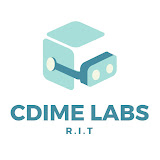
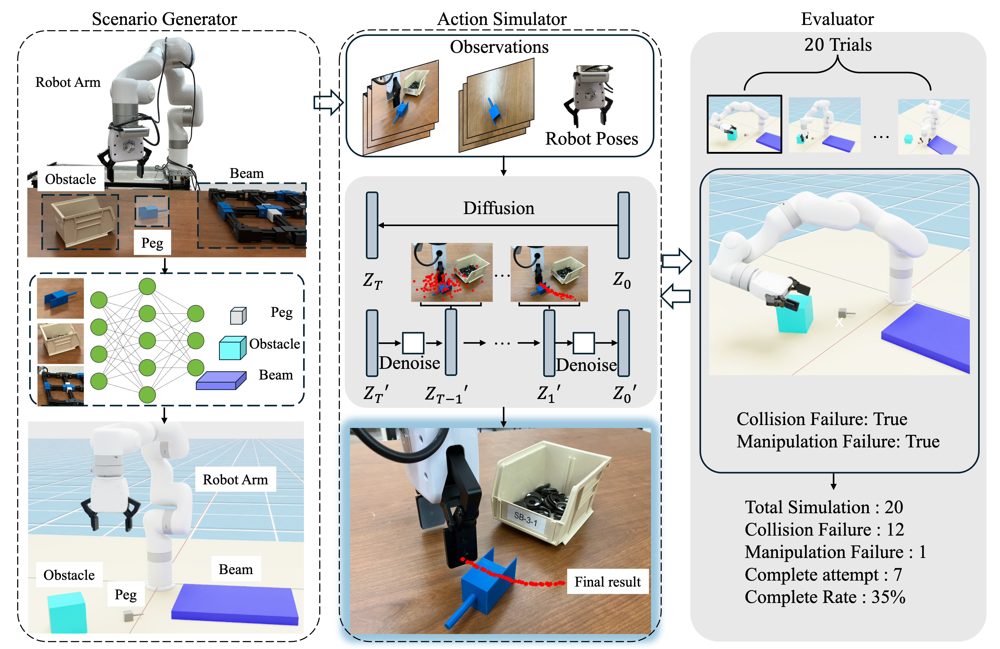
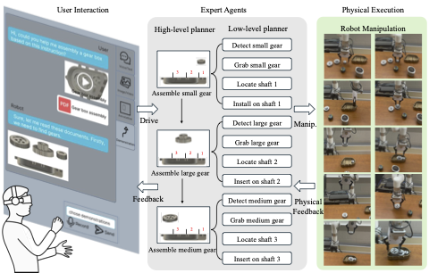
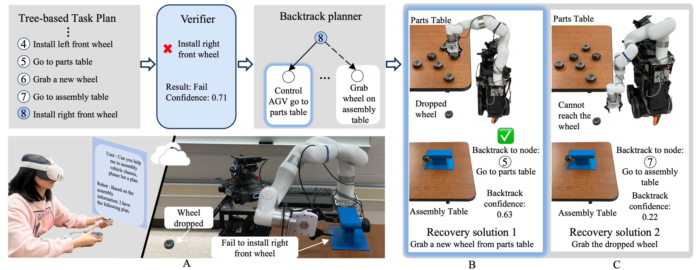
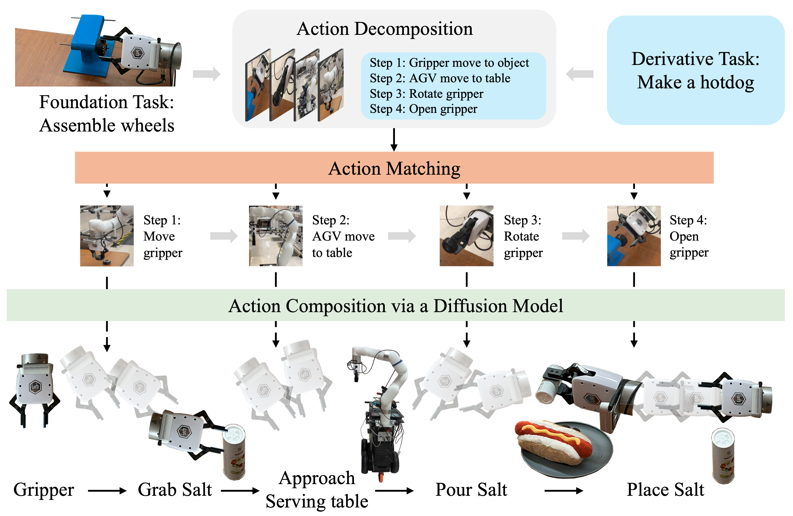
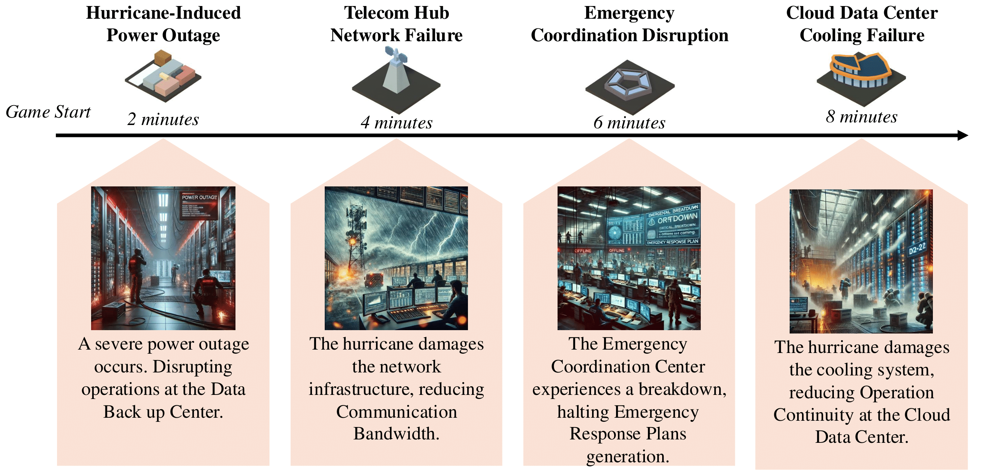
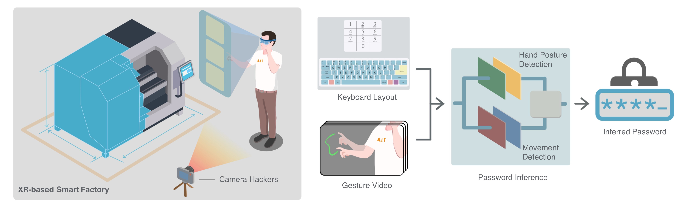
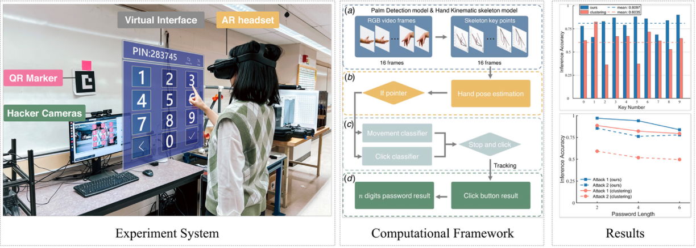

GLE 1565 |


|
I am a third-year Ph.D. student in the Department of Industrial and Systems Engineering at the Kate Gleason College of Engineering, Rochester Institute of Technology (RIT), advised by Dr. Yunbo Zhang. Prior to joining RIT, I earned my M.S. in Computer and Information Technology from Purdue University and my B.S. in Logistics Management from Southeast University, China. |
News
|
Education
- Ph.D. in Industrial and Systems Engineering
Kate Gleason College of Engineering, Rochester Institute of Technology, NY, USA, August 2022 ~ August 2026
(Advisor: Prof. Yunbo Zhang) - M.S. in Computer and Information Technology
Purdue University, IN, USA, August 2016 ~ December 2018 - B.S. in Logistics Management
Southeast University, Nanjing, China, Sep. 2012 ~ Jul. 2016
|
Toyota Production Lab, Rochester Institute of Technology, Rochester, USA Research Assistant, June. 2023 ~ March. 2025 |
|
|
CDIME Lab, Rochester Institute of Technology, Rochester, USA Research Assistant, August. 2022 ~ March. 2025 |
 |

-
Teaching Assistant
- ISEE 741: 3D Printing, Fall 2023-Spring,2025
|
Conference and Journal Papers |
|
|
RoPESim: A Framework for Robot Manipulation Policy Evaluation via Simulation
[Video] Predicting the robot manipulation plan prior to real-world execution is an important capability for robots to complete tasks in manufacturing environments. However, current AI-based manipulation planning methods lack this capability, making it difficult to deploy them in real-world manufacturing scenarios. In this work, we propose a simulation-based human-robot collaboration framework to evaluate predicted robot actions before real-world execution. The framework consists of a VLM-based scenario generator, a diffusion-based action simulator, and an evaluator. First, the scenario generator automatically creates a simulation scenario with objects and obstacles identified and placed. Then, the action simulator generates a series of manipulation action trajectories using a diffusion model in the simulation environment. Each action trajectory is assessed by the evaluator for collision failure, manipulation failure, and completion rate. The final evaluation results are returned to the user for verification and approval. In our experiment, we apply our framework to five chosen scenarios with highly potential collision failures. For each scenario, at least one feasible planned action trajectory is generated. It is then verified through real robot execution, demonstrating the effectiveness of the proposed framework. |
 |
|
VLAbot: A Human–Vision–Language–Action Models Interaction Framework for Robotic Assembly
We propose an intelligent human-robot collaboration system designed to assist embodied intelligence in learning complex, long-horizon manufacturing assembly tasks. The system integrates multiple expert agents and augmented reality (AR) interaction interfaces, allowing robots to request planning and execution guidance from humans and efficiently complete complex tasks. Specifically, the expert agents, equipped with visual language models and large language models, actively interact with users through text, vision, and action modalities to acquire critical information, learn task-specific skills, and develop strategies for sub-task planning. A distributed data and model architecture ensures real-time interactions between different models and facilitates seamless collaboration between humans and robots. We evaluate the system on two challenging long-horizon manufacturing assembly tasks—gear assembly and peg insertion—to demonstrate the effectiveness of the proposed human-robot collaboration approach. The intelligent human-robot collaboration system successfully learns the two assembly tasks within five trials and enabled the embodied intelligence to accomplish two tasks within 8 minutes. |
 |
|
HALO: Hierarchical Long-horizon Manipulation with Failure Recovery
[Video] Finding a backtracking solution based on executed tasks when unexpected failure happens is a promising approach to assist robots in completing long and complex tasks. However, it is still unclear how to dynamically make the manipulation planning for the long-horizon task and finalize the appropriate backtracking strategies when failure arises. In this work, we propose an interactive task planning system that is integrated with a hierarchical task planning agent for long-horizon robot manipulation. The key features of the system are (1) dynamically identifying the failure and constructing the hierarchical manipulation plans for long-horizon tasks and (2) generating appropriate failure recovery solutions through human-robot interaction. In the experiment, we design two challenging long-horizon tasks, a vehicle chassis assembly task, and a hot dog serving task, to demonstrate the effectiveness of the system. The results indicate that the proposed system successfully generates the backtracking strategy and enhances the completeness rate of the long-horizon task. |
 |
|
Zero-shot Robot Manipulation via Action Decomposition and Composition
[Video] The ability to learn generalized skills from demonstrations and apply the acquired skills in various real-world scenarios is a key challenge for robot manipulation. Different from the typical robot learning tasks that learn the action from multiple demonstrated samples in a single task, zero-shot robot manipulation requires the robot to efficiently leverage multiple learned robot skills to accomplish a new task. In this paper, we propose an action decomposition/composition framework that efficiently transfers key manipulation skills to various new derivative tasks. Specifically, we first decompose one demonstration that encompasses several foundation skills that do not contain the derivative task. Then we adopt an action prediction approach to generate possible manipulation poses and the end pose for each subtask in the derivative task based on the robot's action and the video frames from the robot cameras. Since the generated poses may be impacted by previous misleading actions, we denoise the action by selecting the most possible manipulation poses based on the task to guide the robot manipulation. In the experiment, we show our framework can manipulate both robotic arm and automated Guided Vehicle (AGV) in the derivative task. |
 |
|
LLM-ResiGame: Multi-Agent Large Language Models for Creating Scenario-Based Resilience Games in Critical Infrastructure Decision-Making Practices
|
 |
|
Self-supervised 6-DoF Robot Grasping by Demonstration via Augmented Reality Teleoperation System
[Video]
[Code] Most existing 6-DoF robot grasping solutions depend on strong supervision on grasp pose to ensure satisfactory performance, which could be laborious and impractical when the robot works in some restricted area. To this end, we propose a self-supervised 6-DoF grasp pose detection framework via an Augmented Reality (AR) teleoperation system that can efficiently learn human demonstrations and provide 6-DoF grasp poses without grasp pose annotations. Specifically, the system collects the human demonstration from the AR environment and contrastively learns the grasping strategy from the demonstration. For the real-world experiment, the proposed system leads to satisfactory grasping abilities and learning to grasp unknown objects within three demonstrations. |

|
|
“I can see your password”: A Case Study about Cybersecurity Risks in Mid-air Interactions of Mixed reality-based Smart Manufacturing Applications
This paper aims to present a potential cybersecurity risk existing in mixed reality (MR)-based smart manufacturing applications that decipher digital passwords through a single RGB camera to capture the user’s mid-air gestures. We first created a test bed, which is an MR-based smart factory management system consisting of mid-air gesture-based user interfaces (UIs) on a video see-through MR head-mounted display. To interact with UIs and input information, the user’s hand movements and gestures are tracked by the MR system. We setup the experiment to be the estimation of the password input by users through mid-air hand gestures on a virtual numeric keypad. To achieve this goal, we developed a lightweight machine learning-based hand position tracking and gesture recognition method. This method takes either video streaming or recorded video clips (taken by a single RGB camera in front of the user) as input, where the videos record the users’ hand movements and gestures but not the virtual UIs. With the assumption of the known size, position, and layout of the keypad, the machine learning method estimates the password through hand gesture recognition and finger position detection. The evaluation result indicates the effectiveness of the proposed method, with a high accuracy of 97.03%, 94.06%, and 83.83% for 2-digit, 4-digit, and 6-digit passwords, respectively, using real-time video streaming as input with known length condition. Under the unknown length condition, the proposed method reaches 85.50%, 76.15%, and 77.89% accuracy for 2-digit, 4-digit, and 6-digit passwords, respectively |
  |
|
Last Updated on May 27, 2025 |